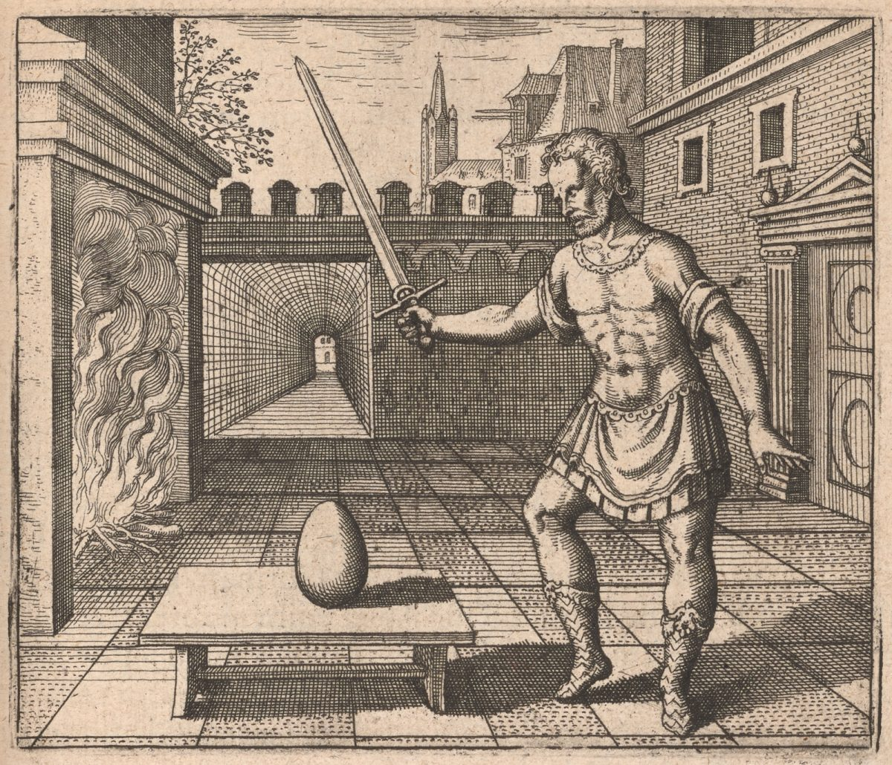
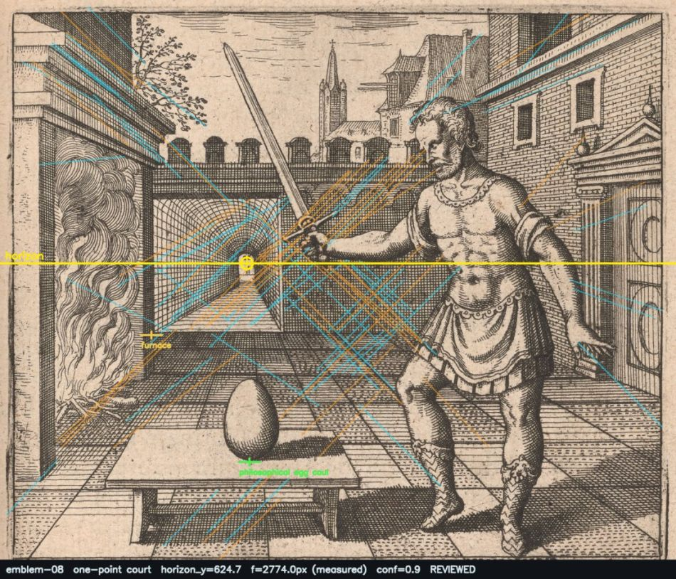
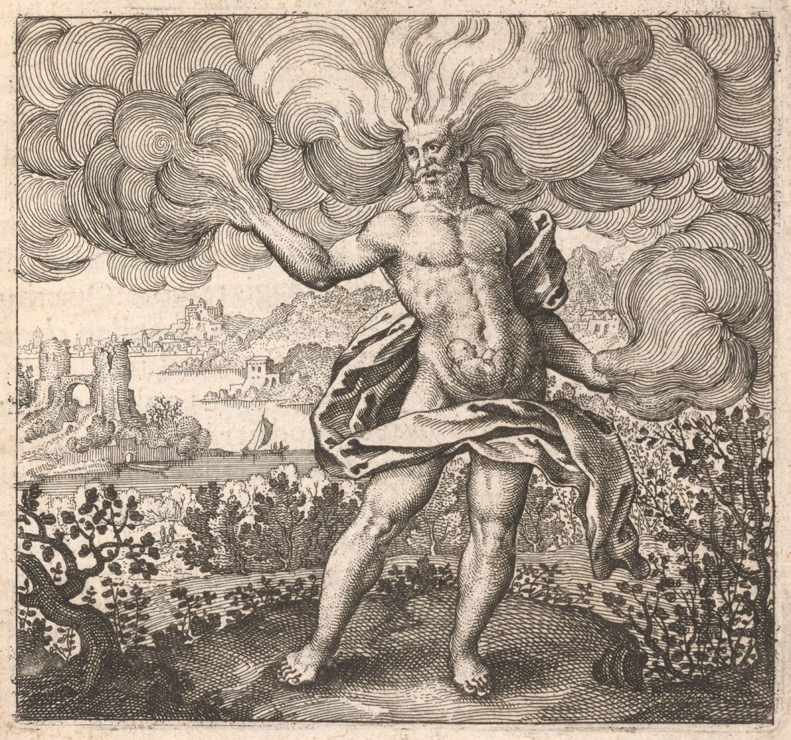
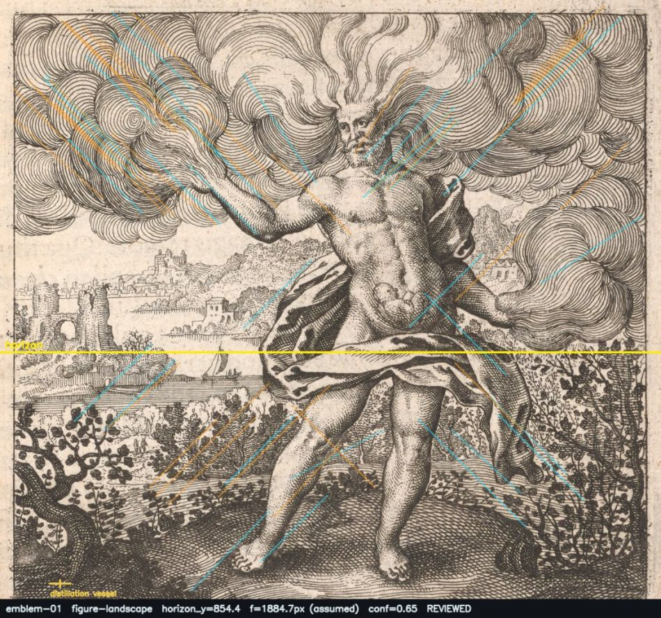
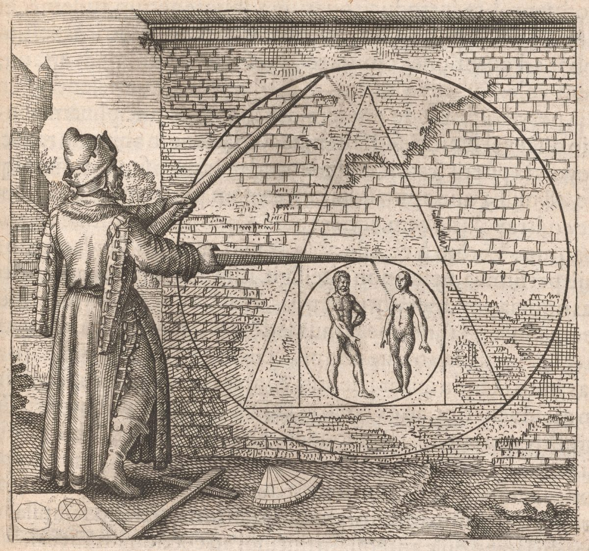
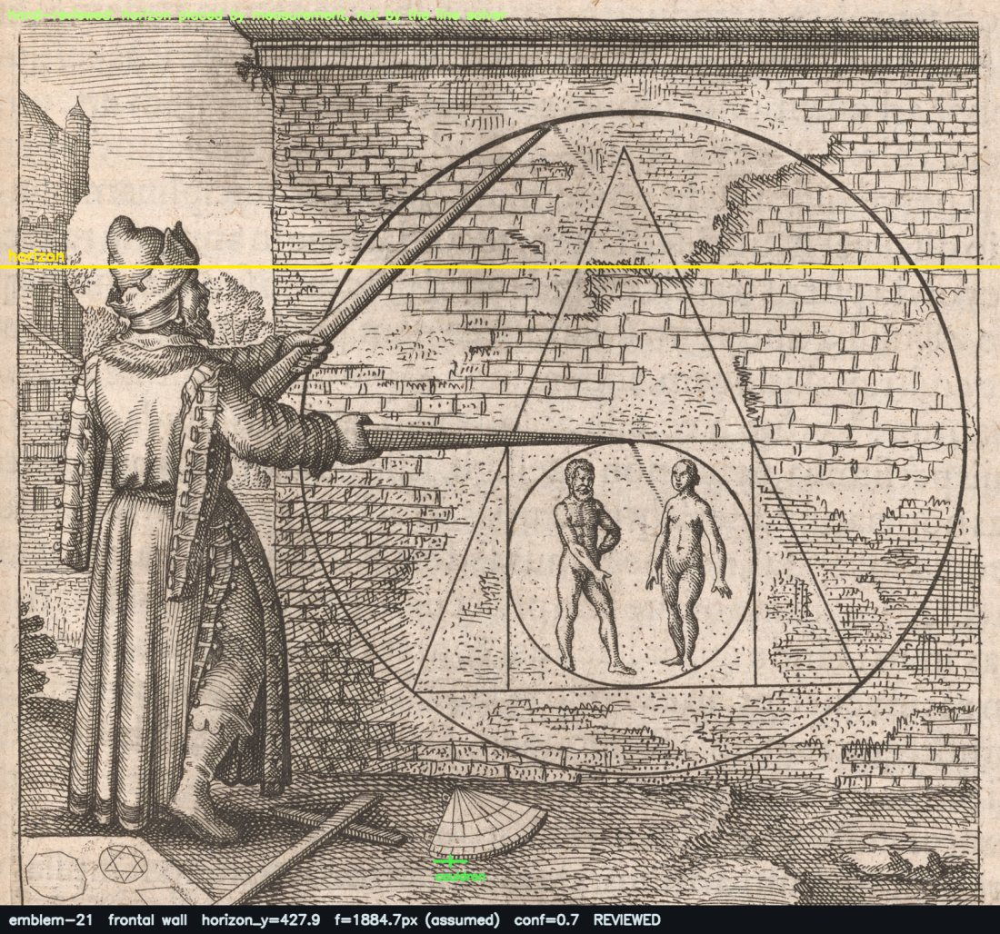

Emblem VIII, Emblem I and Emblem XXI, measured by hand and rebuilt from their own perspective constructions.
Three plates measured by hand on a normalised grid, chosen because between them they cover the three things a reconstruction has to get right: a ruled interior, a landscape of receding registers, and a surface that carries a picture.
one-point · horizon ny 0.45499 · f 2774.0 px · station eye 1.09 m · confidence 0.9 · elements 2 architecture, 1 ornament, 1 standing


MEASURED. The barrel vault's ceiling and floor lines and the courtyard's orthogonals all converge on the small lit doorway at the far end of the tunnel, at nx 0.365 / ny 0.455. That doorway IS the vanishing point; it is the single most legible construction point in the whole book.
ASSUMED: chosen so the adept stands 4.5 m from the station point, a plausible distance for a full-figure view. Two attempts to MEASURE f were made and both failed and are recorded rather than hidden: (1) only one vanishing point is recoverable, so the orthogonality constraint f^2 = -(v1-c).(v2-c) does not apply; (2) the diagonally-laid pavement should give distance points at +/- f along the horizon, but a constrained search found one weak cluster (8 inlier segments, d = 560 px, implying a 110 deg field of view and a courtyard only 2 m deep) and nothing at all on the opposite side. That result is rejected as spurious, not adopted.
MEASURED from the adept. His feet are at ny 0.945 and his crown at ny 0.155; the horizon at ny 0.455 crosses him at (0.945-0.455)/(0.945-0.155) = 0.620 of his height. An upright figure is cut by the horizon at exactly eye height, so eye = 0.620 x 1.75 m = 1.09 m. Merian drew this from a markedly low viewpoint, which is what monumentalises the swordsman. The walk camera must therefore spawn at 1.09 m, not at a default 1.7 m.
The flagship plate and the clearest ruled construction in the corpus. The vault is architecture and must be BUILT, not cut out: EmblemPrintShop's 'athanor retort' detection here is a mis-segmentation covering 831x1311 px of the plate (over half of it) and consisting of a robed arm plus doorway masonry. The old pipeline excluded it from rendering but had already cut its shape out of the backdrop, leaving the black void visible in scene.html.
figure landscape · horizon ny 0.56998 · f 1884.7 px · station eye 1.6 m · confidence 0.65 · elements 1 standing


the far shore of the river, where the flat ground of the middle distance meets the water at ny 0.585, corrected slightly upward for its finite distance
ASSUMED 46 deg horizontal FOV. No architecture recedes far enough to give a usable vanishing point and the plate has no ruled pavement, so f is not recoverable from this image.
ASSUMED standing adult viewer; no figure in this plate can calibrate it, because the only figure present is out of scale (see metric_anomaly)
Boreas is drawn at roughly 1.8x human scale and must stay that way. The horizon crosses him at 0.519 of his height above his feet (feet ny 0.980, crown ny 0.190); an upright figure is cut by the horizon at exactly eye height, so his height is eye_height / 0.519 = 3.08 m against a 1.6 m viewpoint. This is Merian's deliberate monumentalising of the wind-god, not a solver error, and a reconstruction that 'corrects' him to human scale destroys the emblem. Recorded here so downstream code cannot quietly normalise it.
Merian's rolled cloud-scrolls are an engraver's convention for sky, not weather at a distance. They belong on a parallax-free band and must never be given a depth. The old pipeline's CAT_BIAS gave category 'sky' a recession of 0.42, i.e. it treated them as objects standing somewhere.
Dominant armature of the book: near ground, middle band of river and town, far mountains, ornamental sky. Roughly half the 51 plates are of this type, so this solve is the one that pays off most often.
frontal wall · horizon ny 0.28603 · f 1884.7 px · station eye 1.6 m · confidence 0.7 · elements 1 standing


Derived from the philosopher, whose feet are at ny 0.925 and hat-crown at ny 0.245. Taking his eye at 0.94 of his height gives a horizon at ny 0.286. This is corroborated by the picture itself: the underside of the wall's projecting cornice is visible and hatched at the top of the plate, so the viewpoint is below it, while the ground is seen from above.
ASSUMED 46 deg horizontal FOV. The wall is frontoparallel, so it yields no vanishing point at all, and the drawing instruments lying on the ground are too short to give a reliable one.
ASSUMED standing adult viewer, 1.6 m; the philosopher is in normal scale here so the assumption is self-consistent
Self-consistency, all following from horizon_ny 0.286 and f 1884.7: wall base at ny 0.810 lands 3.85 m from the viewer; the philosopher's feet at ny 0.925 land 3.15 m away, so he stands 0.7 m in front of the wall, which is exactly what reaching it with a pair of dividers requires. The wall is then 2.29 m tall and the great circle 2.29 m across, so the diagram fills the wall's full height. Four independent quantities agreeing is the reason this solve is trusted despite f being assumed.
The taxonomy's proving case. The inscribed circle / triangle / square is PAINTED ON the wall: under the old pipeline it becomes a card that pops forward and detaches from the masonry, and you can walk behind Maier's central geometrical argument. It must be a decal on the reconstructed wall. The inner circle holding the coupled figures is a picture inside that picture, so it is a decal on a decal and has depth zero forever. Anything inscribed, painted, held or engraved WITHIN a plate belongs in this category, and it is the commonest misclassification in the corpus.